Funktionsbeschreibung
Erweiterter Texteditor
Der Texteditor ist eine der grundlegenden Funktionen der App ist an allen Stellen, welche erweiterte Textbearbeitung erfordern könnten eingebaut.
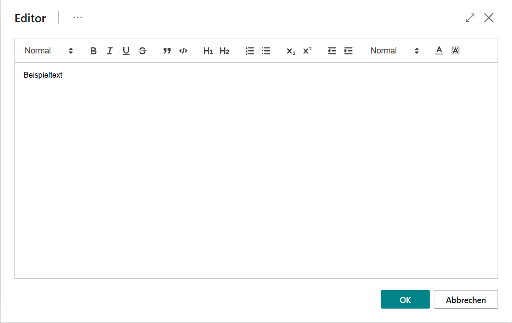
Außerdem wurde eine weitere Funktion eingebaut, welche das Kopieren von anderen Textbausteinen vereinfacht.
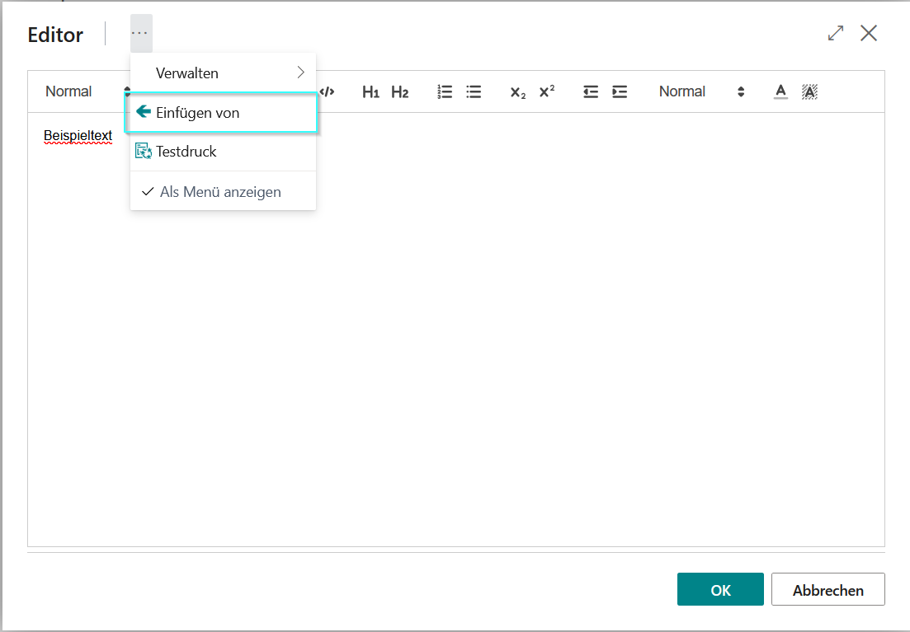
Diese Funktion befindet sich immer im Editor, somit kann auch auf Belegebene kopiert werden.
Einbindung an den Textbausteinen
Die Textbausteine wurde um ein Feld "Textauswahl" erweitert. Somit können die alten Textbausteine normal weiterverwendet werden und gleichzeitig, in einem weiteren Textbaustein, die Langtexte genutzt werden. Dafür muss die "Textauswahl" auf "Blob" geändert werden.

Ist diese Einstellung aktiv, kann über "Zugehörig" "Editor" dann ein Text erstellt werden.
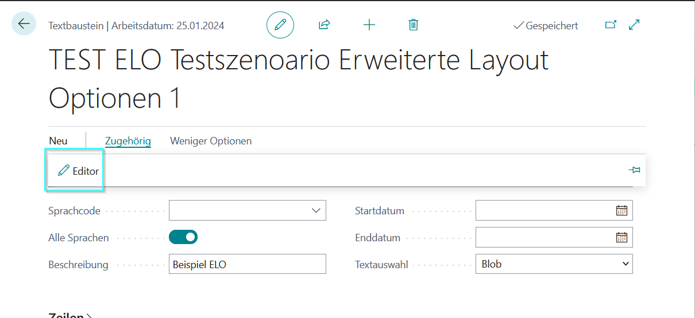
Außerdem wurde ein Register geschaffen, welches eine Vorschau für den Inhalt des Editors bietet.
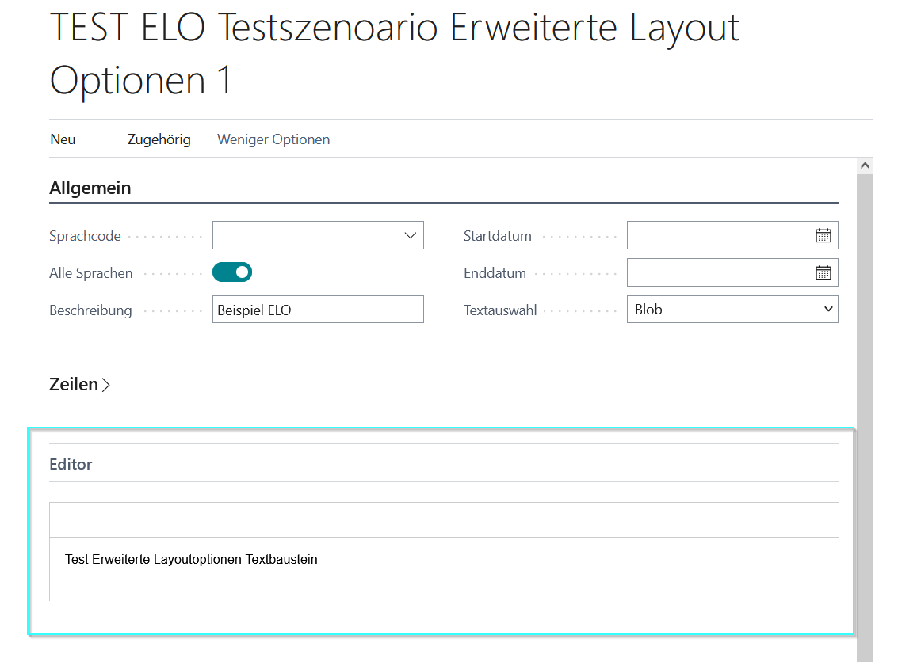
Einbindung am Artikel
Am Artikel sind alle Funktionen wieder an den Artikelbezogenen Textbausteinen vorhanden. Zu finden sind diese unter "Zugehörig" "Artikel" "Textbausteine".
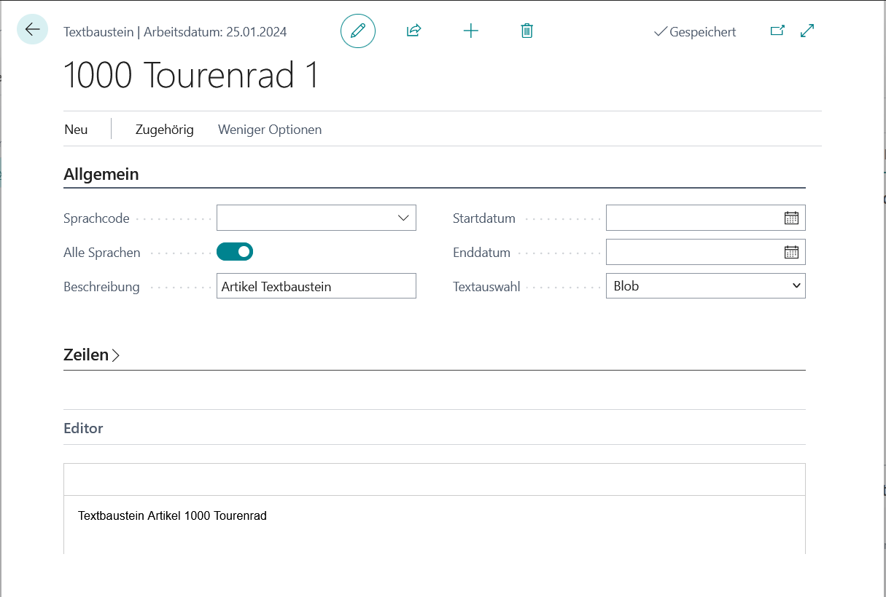
Funktionsbereiche
Die "Erweiterten Layout Optionen" bringen ihre Funktionalität an alle Belege im Verkauf und Einkauf, außerdem werden sie beim Buchen und Archivieren immer mit in den nachfolgenden Beleg übernommen. Somit existiert eine persistente Datenführung über alle eingeschlossenen Belege.
Einbindung auf dem Beleg
Auf den Belegen finden sich die neuen Funktionen zur Textverarbeitung in den Kopf und Zeileninformationen. Der Kopf wurde um ein Register "LeBit Erweiterte Layoutoptionen" ergänzt, in welchem sich alle Kopf- und Fußtexte, für die aus dem aktuell betrachteten Beleg bearbeiten lassen. Das Feld mit den drei Punkten öffnet jeweils den Editor.
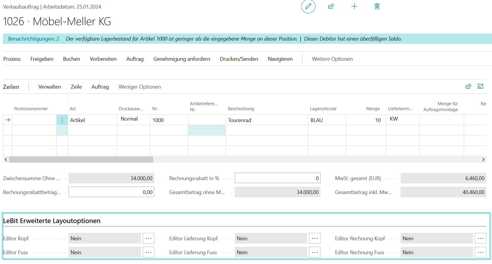
Die Zeileninformationen befinden sich nach Installation am Ende der Artikelzeile, können aber über das "Personalisieren" auch an eine beliebige andere Stelle, in den Zeilen, bewegt werden.
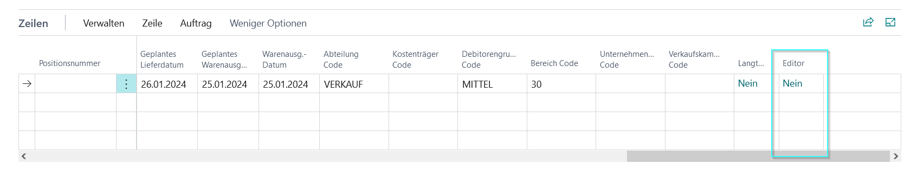
Erweiterte Zeileninformationen und Funktionen
Die Belegzeilen enthalten außerdem zwei neue Felder: "Positionsnummer" und "Druckauswahl", wobei die Druckauswahl Einfluss auf die Positionsnummer nehmen kann.
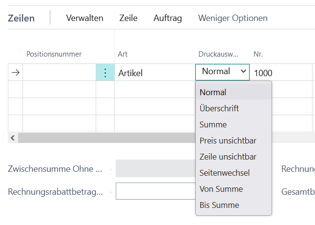
Zusammenfassung der Druckauswahl:
Normal
Zeile wird normal, wie Standard, abgearbeitet.
Überschrift
Die Zeile wird Fett hervorgehoben
Preis unsichtbar
Verbirgt den Preis am Ende eine Zeile
Zeile Unsichtbar
Verbirgt die gesamte Zeile auf dem Ausdruck
Seitenwechsel
Beendet die Zeilen für die aktuelle Seite und beginnt mit der markierten Zeile, als erste Zeile auf einer neuen Seite
Von Summe/ Bis Summe
Mit diesen beiden Einstellungen können Unterblöcke geschaffen werden, welche eine eigene Untersumme bilden sollen. Über die Automatikfunktion "Summieren" werden dann die Untersummen errechnet und mit "Nummerieren" werden die Blöcke auch eingerückt nummeriert.
1
2
Von Summe
2.1
2.2
Bis Summe
3
Automatikfunktionen an den Belegen
In den Menübandern der Belege befinden sich unter "Zugehörig" "LeBit Erweiterte Layoutoptionen" die beiden Funktionen zur automatischen Summierung und Nummerierung der Zeilen.
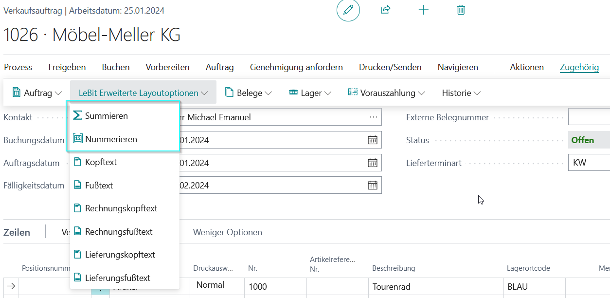
Summieren
Wenn in den Zeilen die Funktion Von- und Bis- Summen genutzt wurde, so wird mithilfe dieser Funktion der Betrag der Zeile automatisch gefüllt.
Nummerieren
Hiermit wird die automatische Nummerierung gestartet. Sie füllt die Positionsnummer mit aufsteigenden Zahlenwerten und berücksichtigt, Von- und Bis- Summer mit einer Einrückung.
Rest
Die an dieser Stelle enthaltenen Funktionen sind die alten Langtexte, welche vor dem Editor genutzt wurden und sind nicht mehr zu benutzen. Sobald es als sinnvoll angesehen wird, werden diese auch entfernt.
Erweiterung der Firmendaten
Folgende Erweiterungen der Register wurden vorgenommen:
Allgemein
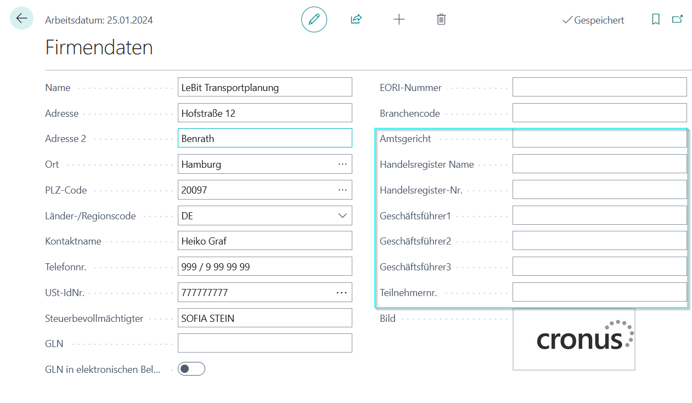
Zahlungen
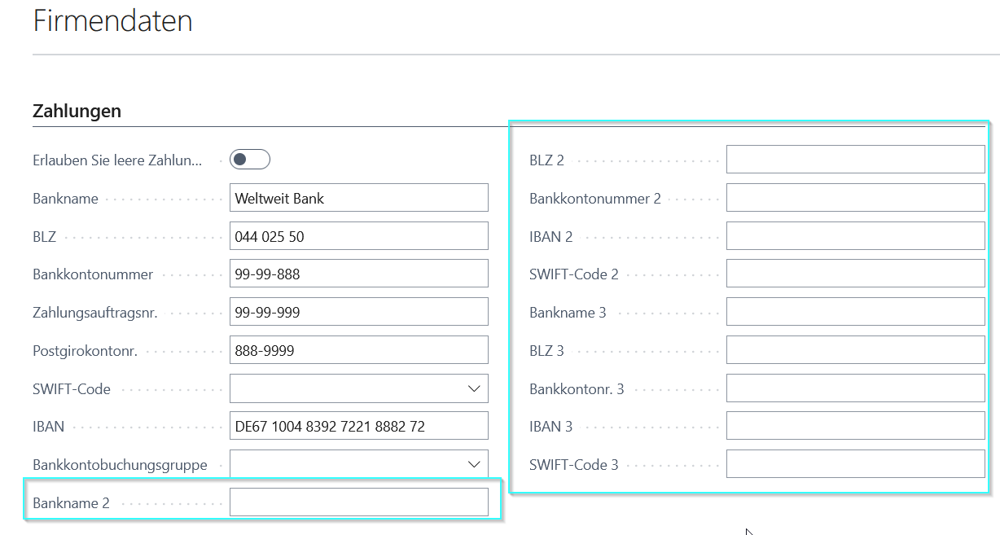
Belegbezogene Texte
An Kreditor und Debitor wurde eine neue Funktionalität "Kopf- und Fußtexte" geschaffen, welche eine Tabelle öffnet in der Texte für Belege hinterlegt werden können, die beim Erstellen von Belegen zu diesen Kreditoren/Debitoren automatisch in die in die Felder der "LeBit Erweiterte Layoutoptionen" geschrieben werden. {#an-kreditor-und-debitor-wurde-eine-neue-funktionalität-kopf--und-fußtexte-geschaffen-welche-eine-tabelle-öffnet-in-der-texte-für-belege-hinterlegt-werden-können-die-beim-erstellen-von-belegen-zu-diesen-kreditorendebitoren-automatisch-in-die-in-die-felder-der-lebit-erweiterte-layoutoptionen-geschrieben-werden. .list-paragraph}
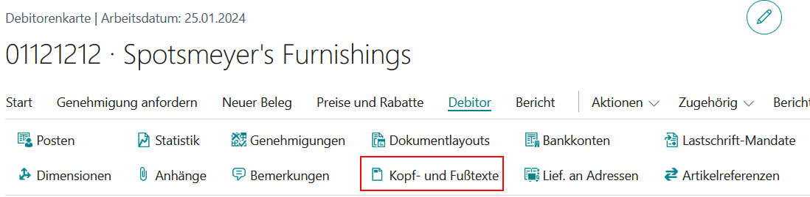
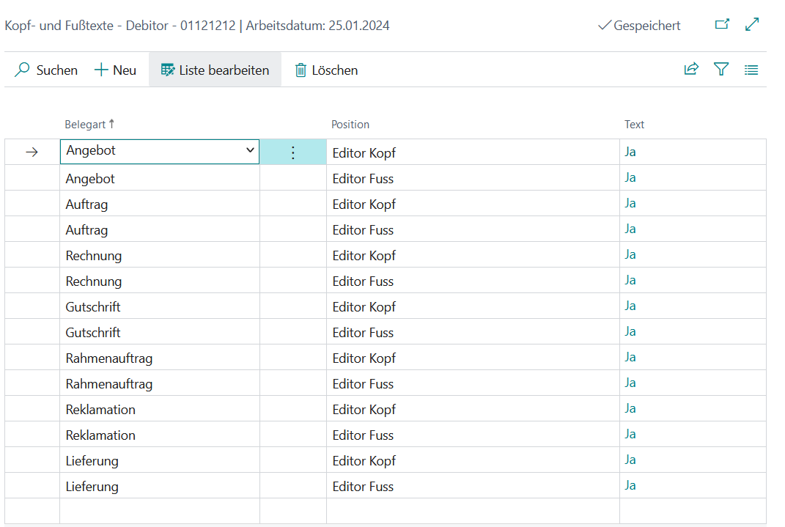
Aktuell unterstützte Belege sind:
Angebot (Anfrage)
Auftrag (Bestellung)
Rechnung
Gutschrift
Rahmenauftrag (Rahmenbestellung)
Reklamation
Lieferung
Da an Debitor und Kreditor dieselbe Tabelle angebunden ist, sind die Bezeichnungen auf beiden Seiten gleich, repräsentieren aber immer den je nach Einkauf oder Verkauf dazugehörigen Beleg.
Wird in das Feld "Text" geklickt, so öffnet sich wie an allen anderen Stellen der Editor und kann zur Erstellung von Texten benutzt werden.
Wird nach dem Pflegen dieser "Stammdaten" dann mit dem dazugehörigen (in diesem Fall) Debitor ein Verkaufsauftrag erstellt, so sind dort direkt die eingetragenen Texte vorhanden.
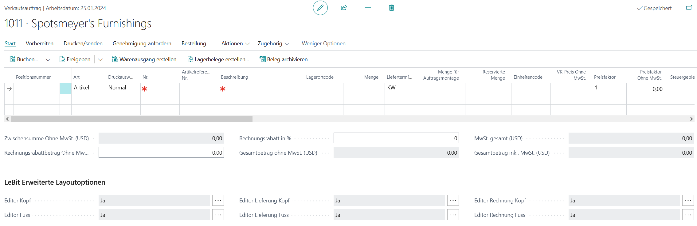
Hierbei werden die Texte für Rechnung und Lieferung auch direkt mit in den Auftrag übergeben, damit diese auch korrekt in den daraus erstellten gebuchten Belegen hinterlegt sind.
Außerdem wird beim Erstellen eines Auftrags aus einem Angebot, das Feld überschrieben, sodass im Auftrag, der Text für Aufträge zu finden ist.
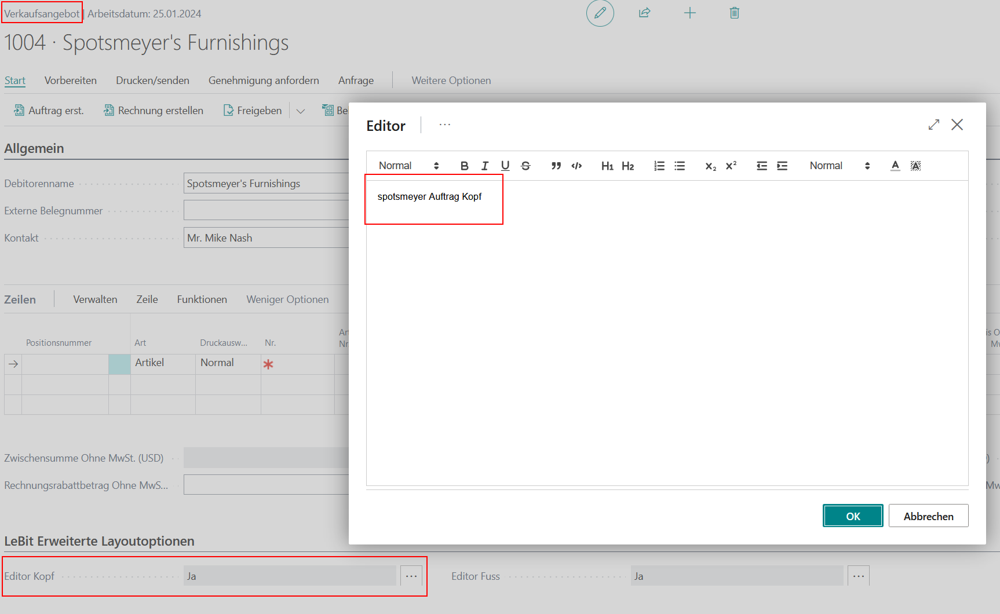
Dann wird über "Start" "Auftrag erstellen" aus diesem Angebot ein Auftrag erstellt.

Drucken von Editor Texten in ForNAV
Damit die im System erstellten Daten auf einen ForNAV-Beleg gedruckt werden können, müssen folgende Schritte befolgt werden:
Record erzeugen
Damit ein Record für den ganze Report erstellt werden kann, müssen alle Sektionen oder Felder abgewählt werden, damit das "Property Grid" die Report Informationen anzeigt. Darin befindet sich auch der Aufruf für "Records" unter "Data".
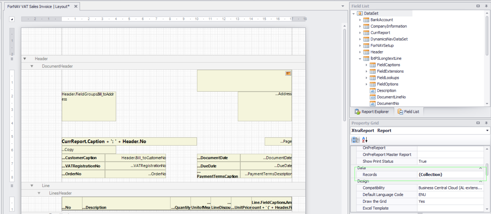
In der geöffneten Tabelle muss nun ein neuer Datensatz angelegt werden:
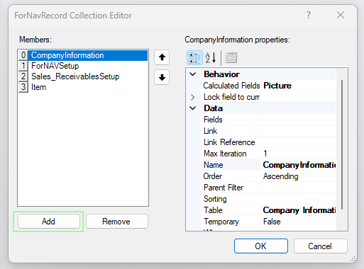
Hier öffnet sich eine Einrichtung für Tabelle und Referenz. Wenn hier in der Tabellensuche nach "PS" gesucht wird finden sich drei Tabellen, welche je nach Report gewählt werden müssen.
Longtext Line für aktuelle Belege
Posted Longtext für gebuchte Belge
Archive Longtext für archivierte Belege
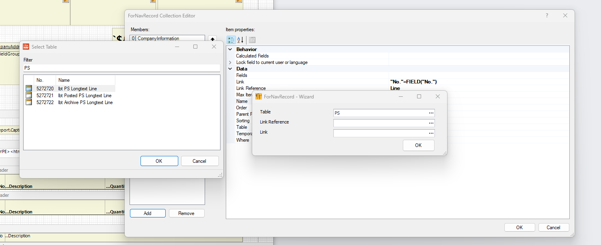
Danach muss eine Referenz definiert werden:
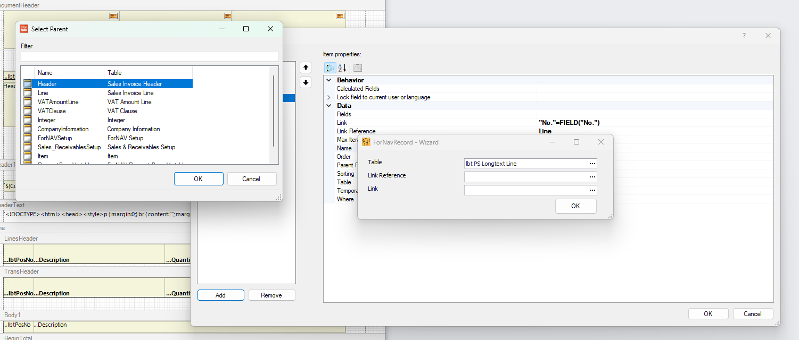
Danach muss der Tabellen Link durchgeführt werden:
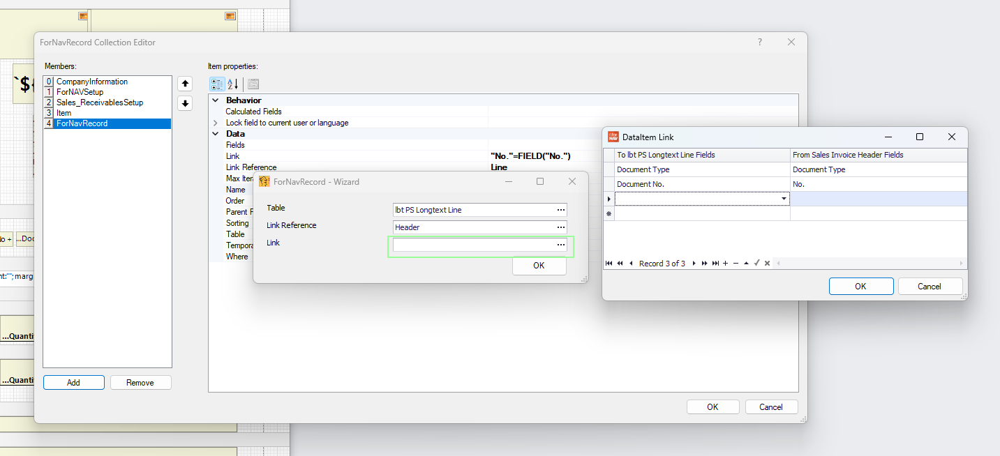
Sollen die Texte aus Zeilen gedruckt werden, muss hier eine Verknüpfung aus den Zeilen über die Zeilen Nummer erstellt werden.
Abschließend wird noch eine Tabelle definiert und die Art des Textes, welche über das Record erhalten werden soll eingestellt werden.
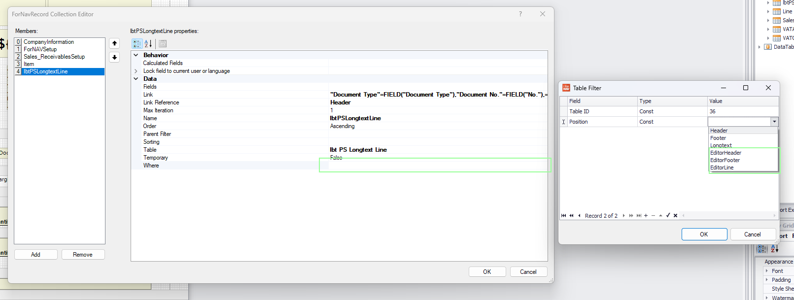
Sales Header 36
Sales Line 37
Purchase Header 38
Purchase Line 39
Sales Shipment Header 110
Sales Shipment Line 111
Sales Invoice Header 112
Sales Invoice Line 113
Sales Cr.Memo Header 114
Sales Cr.Memo Line 115
Zu finden ist das neue Feld dann in der Feldliste in ForNAV.

Nun können die Daten auf dem Beleg genutzt werden.
Wir empfehlen noch dazu folgende "Source Expression" zu der Textbox hinzuzufügen:
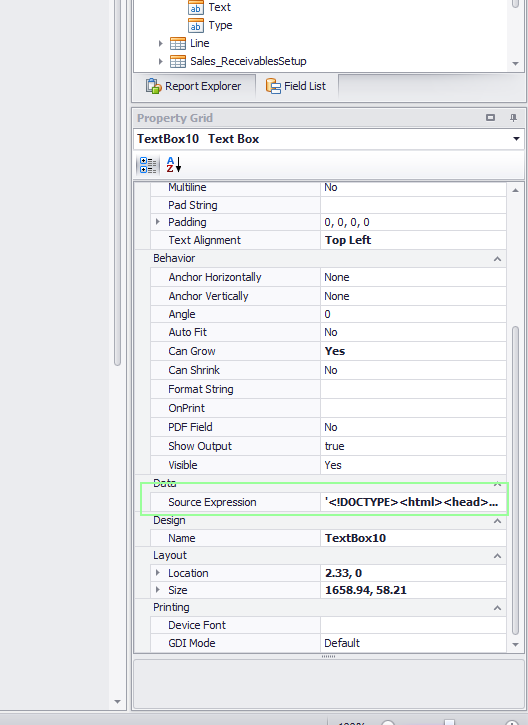
'<!DOCTYPE><html><head><style>p { margin:0;} br { content:""; margin:1em;display:block;font-size:24%;}</style></head><body><div style="font-family: Segoe UI; font-size: 8pt; ">'+
lbtPSLongtextLine.EditorContent +
'</div></body></html>'
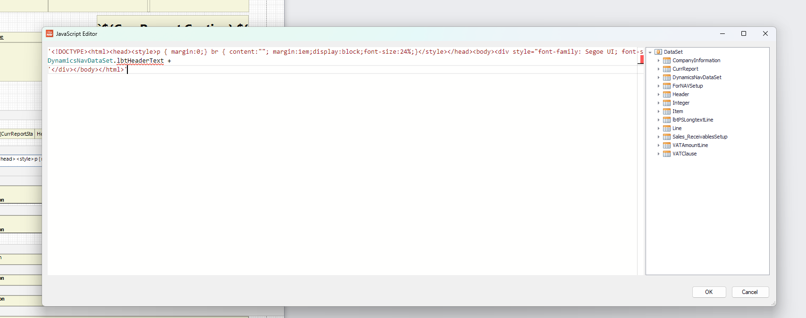